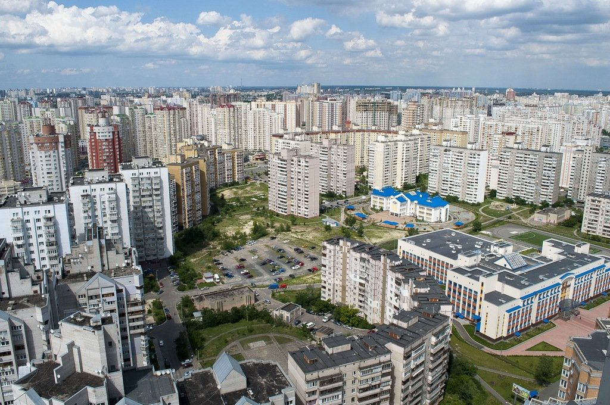

Является самым большим, занимая 156 км² , с населением 247,6 тыс. человек. Располагается в южной части правого берега. Славится наличием настоящего леса. Там же находится ВДНХ и несколько жилмассивов.

Территориально — юг левого берега. Включает в себя целый ряд жилых массивов, таких как Позняки, Осокорки, Харьковский. Здесь проходит дорога из Борисполя. Есть промзона. Площадь — 134 квадрата с 314,7 тысячами проживающих.
Север левобережья. Знаменитая Выгуровщина-Троещина. Жилая и вторая по населению часть города. 358,3 или по другим данным 368,4 тыс. особ, на относительно небольшую квадратуру в 148 кв. км. Славится отсутствиемметрополитена .
Старая Дарница. Наиболее старая, а потому уютная левобережная часть. Занимает значительно меньше — 67 кв. Проживает 354,7 тысяч. Здесь проходит Броварский проспект, можно встретить заводы, красивые площади и дома прошлой эпохи.
Северная часть правобережья в 108,6 км² и 319000 жителей. Находится преимущественно на берегу Днепра и имеет искусственно намытые грунты, что можно заметить по набережному рельефу. В основном состоит из микрорайонов.
Очень маленький, но при этом насыщенный и один из самых ценных. Это историческая территория в 27кв.км. и со 152000 счастливчиками, поселившимися неподалеку от Киево-Печерской лавры, мемориала «Родина-Мать», правительственного квартала и целого каскада произведений искусства, построенных как доходные дома.
Тоже небольшой, в 34 километра². Сюда относится в первую очередь Подол. Одно из наиболее старых и ценных для истории мест города. Относится к Подольскому и зеленый Виноградарь. Населяется почти 200тыс. живущих.
Занял 110км², вместив на своей территории 340000 человек. Сюда частично относится и Борщаговка, и Святошин, и Академгородок с Беличами. Присутствуют и промзоны, и Окружная дорога, а также Житомирская трасса. Это самый запад столицы.
Собрал в себе в основном старые правобережные массивы. Примечателен тем, что всего на 40кв. здесь живет 383,259 людей, что делает его самым густонаселенным местом Киева.
Еще один из исторических, находящихся в центре правого берега. Наименьший по площади, имея 26,6кв. Населяется 218,9тыс.чел. Здесь встречаются как новые комплексы, так и старые дома, архитектурные памятники, важные заведения.